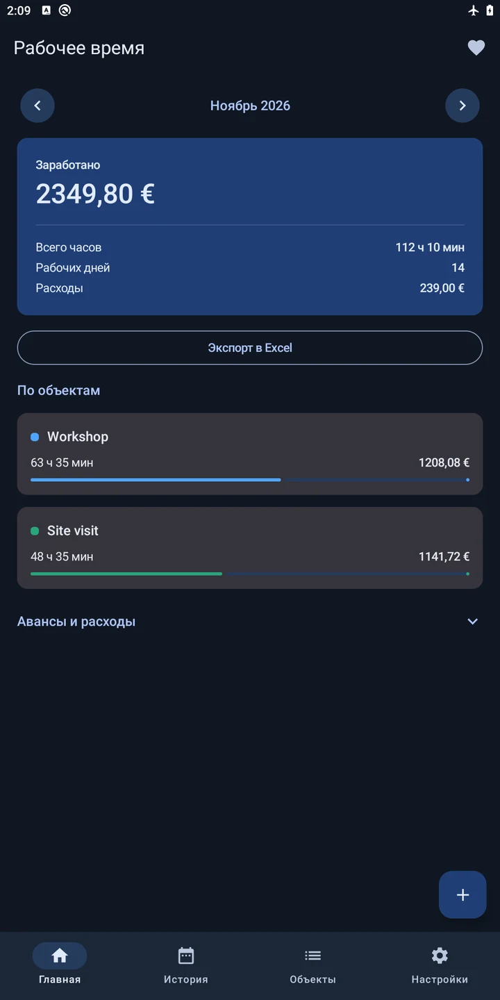
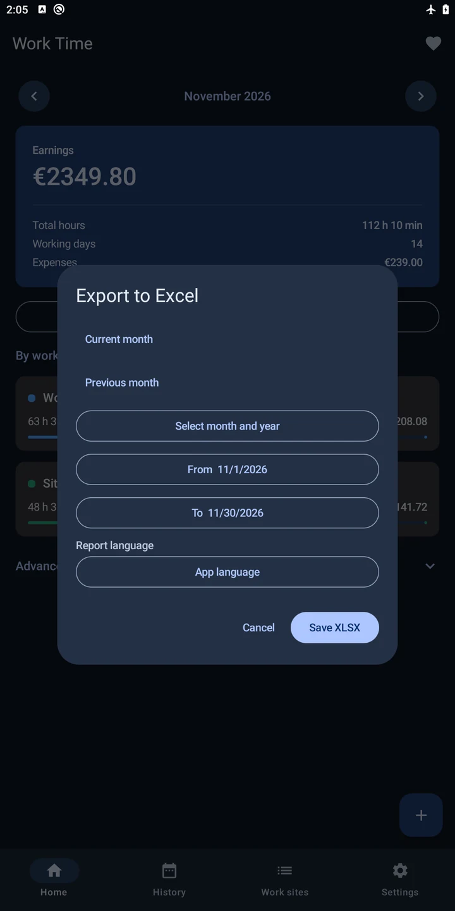

Рабочие смены
Укажите начало и окончание или введите продолжительность вручную. Обеденный перерыв учитывается для каждого объекта.
Записывайте смены, учитывайте обеды и ставки по объектам. Смотрите итоги за выбранный период и выгружайте отчёты в Excel.
Скачать для AndroidДанные о версии пока недоступны.

Укажите начало и окончание или введите продолжительность вручную. Обеденный перерыв учитывается для каждого объекта.
Назначайте объектам цвета и почасовые ставки, архивируйте завершённые объекты. Ставки сохранённых смен остаются в истории.
Проверяйте смены в календаре и истории, смотрите статистику по объектам и за выбранный период.
Учитывайте авансы, билеты, одежду и жильё отдельно от заработка.
Язык отчёта можно выбрать отдельно от языка приложения. Доступны русский, эстонский, английский и украинский.
Сохраняйте и восстанавливайте данные из файла. Рабочие записи хранятся на устройстве. Можно выбрать светлую или тёмную тему.
 Запись смены
Запись смены Рабочие объекты
Рабочие объекты История смен
История смен Календарь
Календарь Статистика
Статистика
Экспорт Excel Настройки
Настройки Выбор языка
Выбор языкаСнимки приложения с демонстрационными данными. Язык отдельных экранов может отличаться.
Android может показать предупреждение, поскольку APK устанавливается вне Google Play. Скачивайте файл с официальной страницы релизов, сверяйте SHA‑256 и оставляйте системную защиту включённой.
Установка на AndroidАккаунт для Work Time не нужен. Смены, расчёты, Excel и резервные копии работают офлайн. Интернет нужен, если вы проверяете обновление вручную, скачиваете APK или открываете внешнюю страницу.
APK распространяется через GitHub Releases. Android может запросить разрешение для браузера или файлового менеджера, который открывает файл.
Создайте резервную копию в настройках, перенесите файл на новый телефон и восстановите его в Work Time.
Все функции Work Time бесплатны. Добровольная поддержка через JoolPay помогает развитию проекта. Спасибо, что пользуетесь приложением.